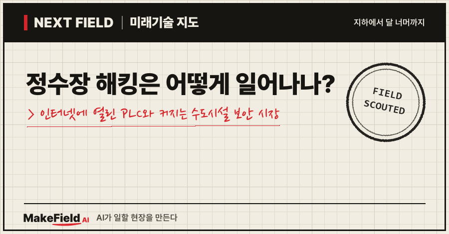
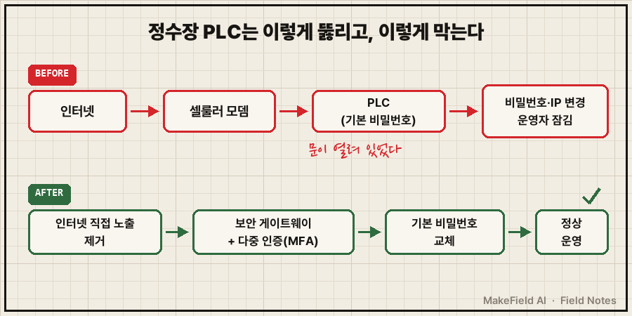
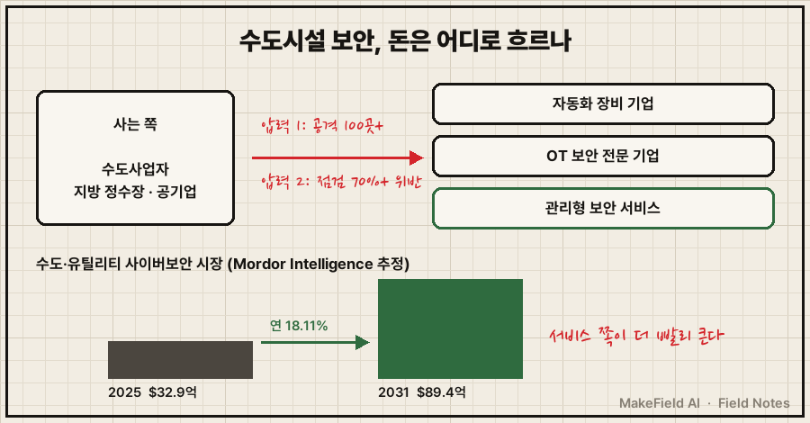
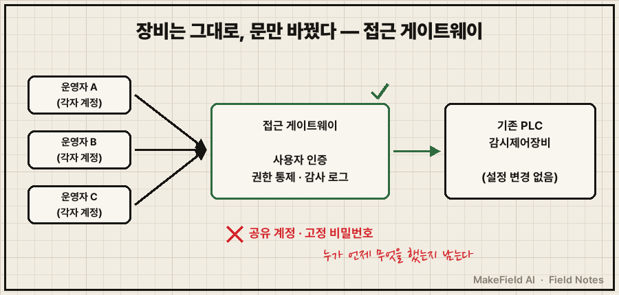

한 줄 요약: 미국 사이버보안·기반시설보안청(CISA)은 2026년 7월 한 달 동안 인터넷에 노출된 수도·하수도 시설 시스템 100곳 이상이 공격 대상이 됐고, 가장 흔한 표적은 휴대폰 통신 모뎀에 바로 연결된 PLC였다고 밝혔습니다(SecurityWeek 2026-08). 정수장 해킹은 영화 속 고난도 침투보다 '인터넷에 열려 있고 기본 비밀번호 그대로인 제어기'에서 시작되는 경우가 많아요.
정수장·펌프장이 해킹당한다는 뉴스를 보고 "물에 독을 탄다는 건가?" 궁금했던 분, 또는 이런 공격을 막는 일이 산업으로서 얼마나 큰지 알고 싶은 분을 위한 글입니다. 2026년 10월 기준 공개 자료로 공격 방식, 돈의 흐름, 한국의 대응 사례까지 차례로 풀어볼게요.
1. 정수장 해킹이란 무엇인가요
정수장 해킹이란 물을 퍼 올리고 약품을 넣고 수위를 맞추는 현장 제어기(PLC)와 감시 화면(HMI)에 외부인이 접속해 설정을 바꾸거나 운영자를 쫓아내는 공격이다. 사무실 PC의 문서를 훔치는 해킹과 달리, 노리는 것이 '물리 설비를 움직이는 손'이에요.
💡 PLC(프로그래머블 로직 컨트롤러) — 펌프·밸브를 정해진 순서대로 켜고 끄는 산업용 소형 컴퓨터. 설비의 '손과 반사신경'에 해당한다.
💡 HMI — 운영자가 설비 상태를 보고 명령을 내리는 화면. 설비의 '계기판'이다.
💡 OT(운영기술) — 정수장·공장·발전소처럼 물리 설비를 직접 움직이는 기술. 이메일·문서를 다루는 사무용 IT와 구분한다.
정수장 제어기는 원래 외부와 끊긴 채 쓰도록 만든 경우가 많아요. 그런데 멀리 떨어진 펌프장·물탱크를 원격으로 보려고 휴대폰 통신 모뎀을 달면서, 의도치 않게 인터넷에서 보이는 장비가 늘었습니다.
2. 실제로는 어떻게 뚫리나요 — 2026년 7월 미국 사례
CISA 경고를 요약한 보안기업 센시스(Censys, 2026-07-30)에 따르면, 공격자는 인터넷에 노출된 PLC의 비밀번호를 바꿔 운영자를 잠가 버리고, IP 주소를 바꿔 장비를 네트워크에서 떼어냈다. 그 결과 일부 시설은 '물을 끓여 마시라'는 공지를 내고 사람이 손으로 설비를 돌리는 수동 운전을 이어가야 했다고 전해요.
💡 셀룰러 모뎀 — 휴대폰 통신망(LTE 등)으로 장비를 인터넷에 붙이는 작은 통신 상자. 선을 깔기 어려운 외딴 펌프장에 자주 단다.
💡 IP 주소 — 네트워크에서 장비를 찾아가는 '집 주소'. 이걸 바꾸면 운영실이 장비를 못 찾는다.

그림 속 내용을 글로 옮기면 이렇습니다. 공격 경로는 '인터넷 → 셀룰러 모뎀 → 기본 비밀번호 PLC' 한 줄이에요. 막는 방법도 세 줄로 정리됩니다. PLC를 인터넷에서 직접 보이지 않게 하고, 원격 접속은 보안 게이트웨이와 다중 인증을 거치게 하고, 기본 비밀번호를 바꾸는 것이에요(CISA 노출 축소 지침, SecurityWeek 2026-08 보도).
피해 규모에 대해서는 보도가 엇갈려요. SecurityWeek(2026-08-26)는 이번 공격이 "큰 차질을 일으키지는 않았다"고 전했고, 배후를 이란 연계 세력으로 연결했지만, 이는 매체 보도 수준이에요. 확실한 건 표적 수(100곳 이상)와 공격 방식(노출 PLC + 약한 비밀번호)입니다.
3. 왜 지금 뜨나요 — '기본 비밀번호'라는 오래된 병목
미국 환경보호청(EPA)은 2023년 9월 이후 점검한 식수 시설의 70% 이상이 음용수안전법상 기본 보안 요건을 지키지 못했다고 밝혔다(EPA 집행 경보, 2024-05). 대표 사례로 기본 비밀번호 미변경, 직원 전원이 계정 하나를 공유, 퇴사자 접속 권한 미회수를 들었어요.
💡 공유 계정 — 여러 사람이 아이디 하나를 같이 쓰는 것. 누가 무엇을 바꿨는지 기록이 남지 않는다.
| 약점 | 쉬운 말 | 왜 위험한가 |
|---|---|---|
| 기본 비밀번호 | 공장 출고 때 비밀번호 그대로 | 설명서에 적혀 있어 누구나 안다 |
| 공유 계정 | 여럿이 아이디 하나 | 사고 나도 누가 했는지 모른다 |
| 퇴사자 권한 | 나간 사람 열쇠 회수 안 함 | 외부인이 된 사람이 여전히 접속 가능 |
| 인터넷 직접 노출 | 제어기를 바깥에 바로 연결 | 검색 엔진으로 찾아낼 수 있다 |
(출처: EPA 집행 경보 2024-05, CISA 노출 축소 지침 보도 SecurityWeek 2026-08)
운영 중인 정수장은 멈추고 장비를 싹 바꾸기 어렵다 보니 "기존 장비는 그대로 두고 앞단에서 막는 방식"이 이 시장의 핵심 수요가 됩니다(추정 — 아래 4·5절 사례 기반 해석).
4. 돈의 흐름 — 누가 사고, 누가 파나요
시장조사업체 모더 인텔리전스(Mordor Intelligence, 2026-01 갱신)는 수도·유틸리티 사이버보안 시장을 2025년 32.9억 달러, 2031년 89.4억 달러(연평균 18.11% 성장)로 추정했다. 시장조사업체 한 곳의 추정치라는 점은 감안해야 해요.
💡 연평균 성장률(CAGR) — 매년 평균 몇 %씩 커졌는지 나타내는 숫자. 18%면 약 4년 만에 두 배가 되는 속도다.

같은 보고서의 구성을 보면 돈이 어디로 흐르는지 보입니다.
| 구분 | 2025년 비중·성장 | 의미 |
|---|---|---|
| 제품(솔루션) | 62.48%로 최대 | 방화벽·접근통제 장비 같은 '물건' |
| 서비스 | 연 20.12%로 가장 빠른 성장 | 보안 인력이 없는 작은 시설이 '관리'를 산다 |
| 적용처 | 정수장 38.68%로 최대 | 가장 돈이 많이 쓰이는 현장 |
| 지역 | 북미 38.25% 최대, 아시아태평양 최고속 성장 | 미국이 먼저, 아시아가 뒤따름 |
(출처: Mordor Intelligence, 2026-01)
파는 쪽은 크게 세 부류예요(이하 기업명은 산업 구조 설명용 예시이며 투자 판단과 무관합니다). 첫째는 지멘스·슈나이더 일렉트릭·ABB 같은 자동화 장비 기업, 둘째는 클래로티·드라고스·노조미 네트웍스 같은 OT 보안 전문 기업, 셋째는 보안 인력이 없는 작은 시설을 대신 지켜 주는 관리형 보안 서비스입니다(Mordor Intelligence 기업 목록). 같은 보고서는 소규모 지방 시설의 예산 부족과 OT 보안 인력 부족을 성장의 발목으로 꼽았어요.
더 넓게 보면 수도뿐 아니라 공장·에너지까지 합친 전 세계 OT 보안 시장은 2025년 234.7억 달러에서 2030년 502.9억 달러로 커질 것으로 추정됩니다(MarketsandMarkets, 2025-04 보도자료).
5. 한국은 누가 하고 있나요 — K-water 방식
한국수자원공사(K-water)와 보안기업 센스톤은 '수도시설 감시제어설비 보안 강화를 위한 사용자 인증 시스템'을 공동 개발해 성과공유제 최종 심의에서 적합 판정을 받았다(디지털데일리·바이라인네트워크, 2026-06-11). 해결하려던 문제는 미국 사례와 같은 고정 비밀번호·공유 계정·접속 기록 부족이었어요.
💡 성과공유제 — 공기업·대기업이 협력사와 함께 기술을 개발하고, 성과(구매 등)를 나누는 제도.
💡 감사 로그 — 누가 언제 어떤 설비에 접속해 무엇을 했는지 남기는 기록. 설비의 '블랙박스'다.

핵심은 기존 감시제어장비의 설정을 바꾸지 않고, 장비 앞단에 접근 게이트웨이를 두어 사용자별 인증·권한 통제·감사 로그를 붙였다는 점이에요(바이라인네트워크). 운영 중인 국가 기반시설은 쉽게 멈추거나 바꿀 수 없어서, 완성품을 사기보다 현장에 맞는 구조를 함께 검증했다고 합니다(디지털데일리). 두 회사는 적용 대상을 PLC에서 RTU·DCS·HMI로 넓히고 공동 특허 출원도 추진할 계획이에요.
💡 RTU·DCS — RTU는 먼 현장의 신호를 모아 중앙으로 보내는 장치, DCS는 큰 공정을 여러 제어기로 나눠 돌리는 시스템.
6. 언제 오나요, 한계는 무엇인가요
- 수요는 이미 와 있다: 미국은 공격 표적 100곳 이상(2026-07), 점검 시설 70% 이상 요건 미달(EPA)이라는 숫자가 이미 나왔어요. 한국은 공기업 실증이 끝나고 확대 단계에 들어섰습니다.
- 돈이 없는 고객: 성장의 발목은 작은 지방 시설의 예산 부족이에요(Mordor Intelligence). 공격이 가장 쉬운 곳이 가장 돈이 없는 곳이라는 모순이 있습니다.
- 피해가 작으면 지출도 늦다: 2026년 7월 공격은 "큰 차질이 없었다"는 보도도 있어요(SecurityWeek). 큰 사고가 없으면 예산 편성이 뒤로 밀릴 수 있습니다(추정).
- 시장 숫자는 한 곳의 추정: 수도 분야만 떼어 낸 시장 규모는 모더 인텔리전스 외 독립 추정치를 찾지 못했어요. 숫자보다 방향(서비스 쪽이 더 빨리 큰다)을 읽는 편이 안전합니다.
자주 묻는 질문(FAQ)
Q. 정수장 해킹으로 수돗물에 독을 탈 수 있나요?
A. 2026년 7월 미국 사례에서 확인된 피해는 비밀번호·IP 주소 변경으로 운영자가 잠기고 일부가 수동 운전·끓여 마시기 공지를 낸 수준이에요(Censys 요약). 약품 주입 조작 같은 피해는 이번 공개 자료에서 확인되지 않았습니다.
Q. 왜 하필 수도시설이 표적이 되나요?
A. 작은 시설이 많아 보안 인력·예산이 부족하고, 외딴 펌프장을 원격으로 보려고 셀룰러 모뎀을 달면서 인터넷 노출이 늘었기 때문이에요. EPA 점검에서도 기본 비밀번호·공유 계정 같은 기초 약점이 반복해서 나왔습니다.
Q. 장비를 전부 바꿔야 막을 수 있나요?
A. 꼭 그렇지는 않아요. CISA 지침은 노출 제거·보안 게이트웨이·다중 인증·비밀번호 교체를 권하고, K-water 사례도 기존 장비 설정은 그대로 두고 앞단 게이트웨이로 접근을 통제했습니다.
오늘의 용어 정리
- PLC — 펌프·밸브를 순서대로 움직이는 산업용 소형 컴퓨터.
- HMI — 운영자가 설비를 보고 조작하는 화면.
- OT(운영기술) — 물리 설비를 직접 움직이는 기술(사무용 IT와 구분).
- CISA — 미국 사이버보안·기반시설보안청.
- 셀룰러 모뎀 — 휴대폰 통신망으로 장비를 인터넷에 붙이는 통신 상자.
- IP 주소 — 네트워크에서 장비를 찾는 주소.
- 다중 인증(MFA) — 비밀번호에 휴대폰 인증 같은 확인을 하나 더 거는 방식.
- 공유 계정 — 여러 사람이 아이디 하나를 같이 쓰는 것.
- 감사 로그 — 누가 언제 무엇을 했는지 남기는 기록.
- 연평균 성장률(CAGR) — 해마다 평균 몇 %씩 커지는지 나타내는 숫자.
- 성과공유제 — 공기업·대기업과 협력사가 함께 개발하고 성과를 나누는 제도.
- RTU·DCS — 원격 신호 수집 장치 / 대형 공정 분산 제어 시스템.
정수장 보안의 첫 번째 숙제는 최신 기술이 아니라 '공장 출고 비밀번호를 바꾸는 일'이라는 점이 이 시장의 역설이에요. 다음 Next Field에서는 또 다른 '다음 현장'을 가 볼게요. 여러분 동네 수돗물을 관리하는 시설은 원격 접속을 어떻게 관리하고 있을지, 한 번쯤 궁금해지지 않나요?
출처
[1] SecurityWeek(2026-08-26) — CISA, 2026년 7월 수도·하수도 분야 인터넷 노출 시스템 100곳 이상 공격 확인, 셀룰러 모뎀 직결 PLC가 주 표적, 노출 축소 지침(노출 제거·기본 비밀번호 교체·보안 게이트웨이·다중 인증), 큰 차질 없음
→ https://www.securityweek.com/cisa-over-100-internet-exposed-water-systems-targeted-in-july-cyberattacks/
[2] 센시스 Censys(2026-07-30) — CISA 경고 요약: PLC 비밀번호 변경으로 운영자 잠금, IP 주소 변경으로 장비 분리, 끓여 마시기 공지·수동 운전
→ https://censys.com/blog/cisa-alert-water-tower-plc-targeting/
[3] 미국 환경보호청 EPA 집행 경보(2024-05) — 2023년 9월 이후 점검 시설 70% 이상 기본 요건 위반, 기본 비밀번호 미변경·공유 계정·퇴사자 권한 미회수
→ https://www.epa.gov/enforcement/enforcement-alert-drinking-water-systems-address-cybersecurity-vulnerabilities
[4] Mordor Intelligence(2026-01) — 수도·유틸리티 사이버보안 시장 2025년 32.9억 달러→2031년 89.4억 달러(연 18.11%), 제품 62.48%·서비스 연 20.12% 성장, 정수장 38.68%, 북미 38.25%, 주요 기업 목록, 예산·인력 부족 제약
→ https://www.mordorintelligence.com/industry-reports/water-and-utilities-cybersecurity-market
[5] MarketsandMarkets 보도자료(2025-04) — 전 세계 OT 보안 시장 2025년 234.7억 달러→2030년 502.9억 달러(연 16.5%)
→ https://www.prnewswire.co.uk/news-releases/operational-technology-ot-security-market-worth-50-29-billion-by-2030--exclusive-report-by-marketsandmarkets-302442392.html
[6] 디지털데일리(2026-06-11) — K-water·센스톤 수도시설 감시제어설비 사용자 인증 시스템 성과공유제 적합 판정, 완성품 대신 공동 검증, 기존 설정 변경 없음, RTU·DCS·HMI 확대 계획
→ https://www.ddaily.co.kr/page/view/2026061109060913261
[7] 바이라인네트워크(2026-06-11) — 고정 비밀번호·사용자 식별 부재·접속 로그 미흡 문제, 접근 게이트웨이로 사용자별 인증·접근통제·감사 로그, 공동 특허 출원 예정
→ https://byline.network/2026/06/11-662/